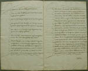
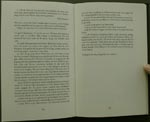
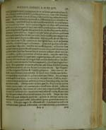
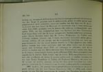

Christiaan Huygens. Facetten van een genie
De manuscripten
8 april 31 mei 2004
Tentoonstelling in de Universiteitsbibliotheek Leiden
5. Huygens’ dood en testament: het legaat (1695-1697)
Nadat in 1694 zijn werkkracht sterk achteruit was gegaan overleed Christiaan Huygens op 8 juli 1695. Enkele maanden voordien – “overdenckende de seekerheijt des doodts, de onseeckere tijd ende uyre van dien” – had hij zijn testament opgesteld. Een groot deel van zijn wetenschappelijke papieren vermaakte hij aan de Leidse universiteit en hij bepaalde tevens dat de hoogleraren De Volder (Leiden) en Fullenius (Franeker) enkele geschriften eruit zouden uitgeven, tegen een vergoeding van duizend gulden elk. Daarmee toonde Huygens zich sterk bewust van de wetenschappelijke waarde van zijn papieren. Zijn bibliotheek werd nog in 1695 door Moetjens in Den Haag geveild.
|  | 5.1. Testament van Christiaan Huygens,
gepasseerd 23 maart 1695. Manuscript (later afschrift). [HUG 46] –– (Linksonder): “Mijne schriften van Mathematycke leggende meeste part in de onderste lajen van mijn grootste Cabinet op Hoffwijck bestaande in negen ingebonden boeken met de letters van A tot I gemerckt ende voorts in veel tractaten dien ick onder hande hadde, legatere ick aan de Academie ofte Bibliotheecq van Leyden […]. Ik legatere mede aan deselve Bibliotheecq de pacquetten daarop geschreven staat [Literae doctorum off eruditorum leggende op een stoel in mijn cabinet op Hoffwijk, alsmede de Fransche brieven van monsieur Leibnitz en den Marquis de l’Hospitael, … waarby sijn mijne antwoorden]”. |
|  | 5.2. C.D. Andriesse, Titan kan niet slapen.
Een biografie van Christiaan Huygens. Amsterdam/Antwerpen
1993. [1029 G 16] –– De beschrijving van Christiaans levenseinde ontleende Andriesse aan de dagboeken van Christiaans broer Constantijn, die berusten in de Koninklijke Bibliotheek. |
|  | 5.3. Acta eruditorum anno 1695 publicata.
Lipsiae 1695. [1456 B 7] –– In de augustusaflevering van dit internationale geleerdentijdschrift maakte Gottfried Wilhelm Leibniz het overlijden van Huygens bekend (rechts, midden): Dum haec scribo, triste nuntium mortis Viri incomparabilis, Christiani Hugenii accipio ... – “Terwijl ik dit schrijf, ontvang ik het treurige bericht van de dood van de onvergelijkbare Christiaan Huygens. De zeer verheven wetenschappen die de menselijke geest toegang verschaffen tot de geheimen der natuur konden geen groter verlies ervaren. Alleen in chronologisch opzicht rangschik ik Huygens achter Galileo en Descartes. Terwijl hij al geweldige zaken heeft gepubliceerd, werden er niet minder prachtige werken van hem verwacht. En ik hoop dat er in zijn papieren nog een schat ontdekt gaat worden, die ons in elk geval zou troosten. Te meer moet zijn broer [Constantijn], een beroemd man vanwege zijn verdiensten voor de Republiek, verzocht worden dat hij door het bespoedigen van de editie [van CH’s werken] zich zowel om het algemene nut bekommert alsook om de roem van zijn broer, ja om zijn eigen roem”. |
|  | 5.4. Resoluties van Curatoren, 8 februari 1697,
uitgegeven in: P.C. Molhuysen, Bronnen tot de geschiedenis
der Leidsche universiteit, dl. IV: 18 febr. 1682 – 8 febr.
1725 (’s-Gravenhage 1920). [DOUSA 80 0204]. –– Linksboven: Curatoren aanvaarden het legaat en belasten de Secretaris met de afhandeling van de overdracht. Op termijn dienen de manuscripten “in de daertoe verordineerde kassen op de publyckque Bibliotheeq gerangeert ende opgeslooten te worden”. |
| vorige pagina | volgende pagina |